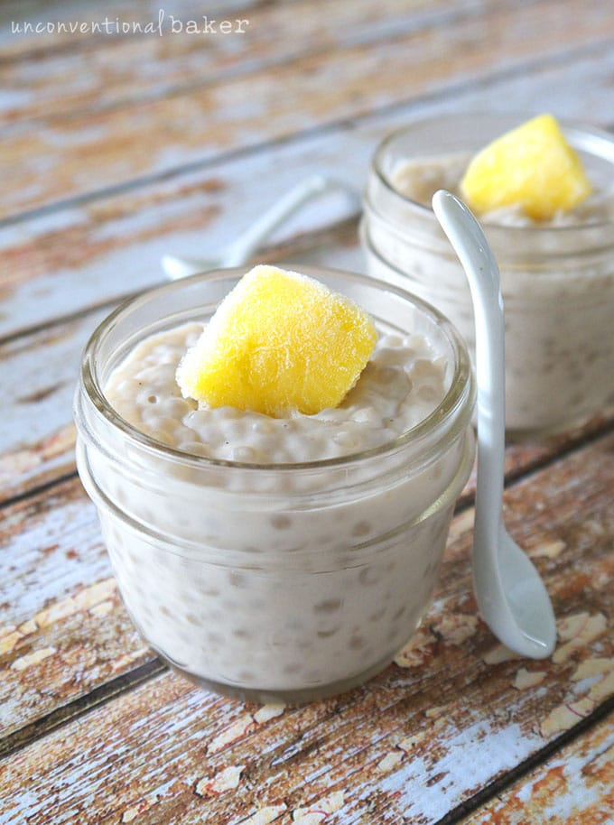

Vegan Tapioca Pudding

Tapioca Pudding is one of the easiest and tastiest vegan desserts you can make!
Originating from the Pacific region of Asia, tapioca pearls can be used in a variety of recipes.
I used a combination of soy and coconut milk, but feel free to use any milk you like.
Ingredients:
- 1 cup tapioca preals
- 2 cups water
- 1/2 cup soy milk
- 1/2 cup low fat coconut milk
- 3 Tbsp sugar
- Fresh or frozen fruit of choice
Preparation:
- In a bowl add tapioca preals and water and let it soak for 10 minutes.
- Add the preals with the soaking water to a pot.
- Add both milks and sugar.
- Keep on medium heat until the sugar dissolves, then reduce to low.
- Heat until the preals become translucent.
- Transfer to serving containers and let cool.
- Optional: Put in the fridge for at least 2 hours.
- Add the fruit and serve.
Back to recipes